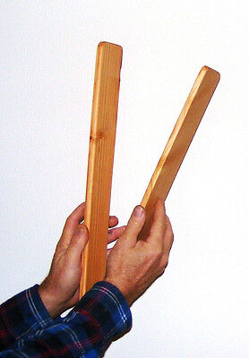

Captura y Procesamiento de Respuesta al Impulso
Proyecto Acústica UACh - Grupo X
Bienvenido al informe del proyecto de medición acústica.
👥 Integrantes del Grupo
- Nombre 1
- Nombre 2
- Nombre 3
🛠️ Equipamiento Utilizado

Micrófono: Behringer-ECM8000

Fuente sonora: Wood clapper

Grabadora/Interface: KOMPLETE Audio 1

Software: Ableton Live 12 Suite
📍 Recintos Medidos
1. Cámara Reverberante Acústica UACh
2. Edificio 14K
3. Edificio 6K pasillos
Descripción breve del recinto...
🎧 Respuesta al Impulso:
🎙️ Grabaciones en Cámara Anecoica
Grabaciones de voz e instrumento sin reverberación.
Voz
Instrumento
🔁 Convolución con Respuestas al Impulso
Aplicación de convolución para simular los recintos.
Voz en Cámara Reverberante
Instrumento en Recinto 2
📸 Galería Fotográfica
Aquí irían las fotos del proyecto cuando estén disponibles.
🎵 Reproductor de Audios
🔊 Respuestas al Impulso Originales
Estas son las grabaciones originales de los impulsos en cada recinto.
1. Cámara Reverberante
0:00 / 0:00
Vol:
Grabado en la cámara reverberante de la UACh con wood clapper.
2. Edificio 14K
0:00 / 0:00
Vol:
Respuesta al impulso grabada en el edificio 14K.
3. Edificio 6K Pasillos
0:00 / 0:00
Vol:
Respuesta al impulso en los pasillos del edificio 6K.